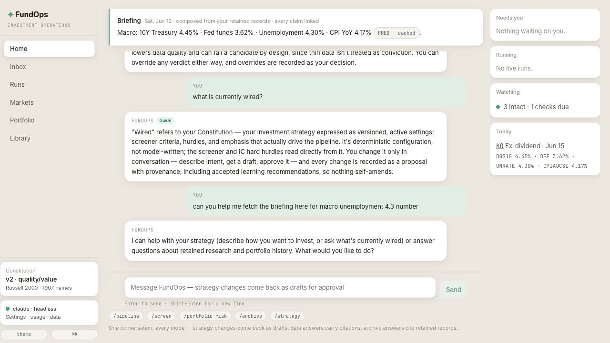
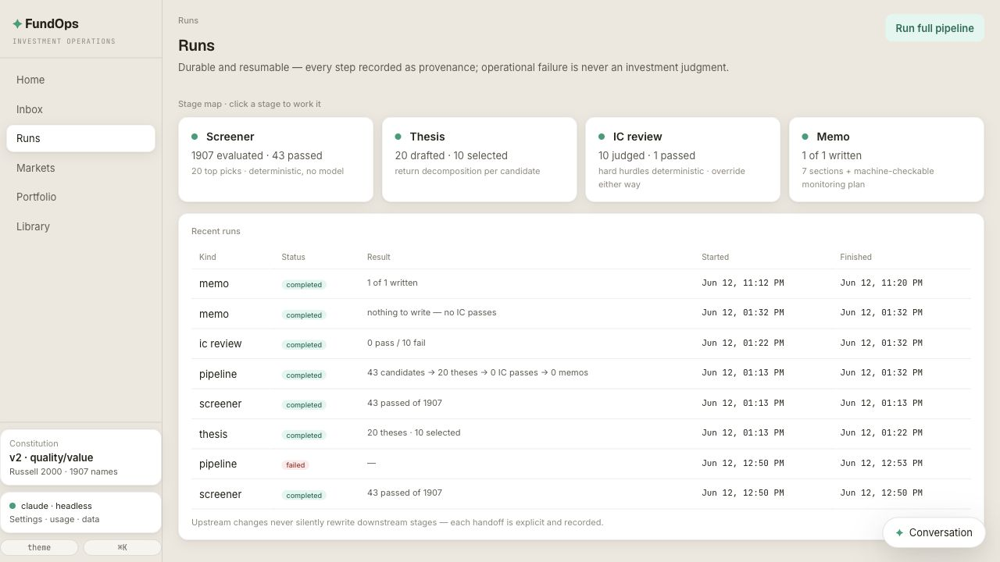
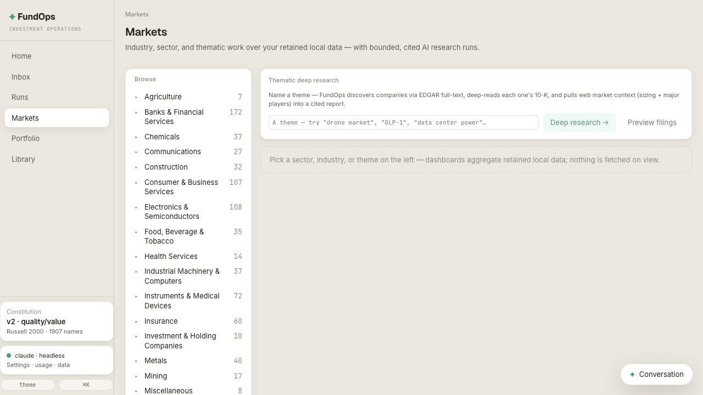
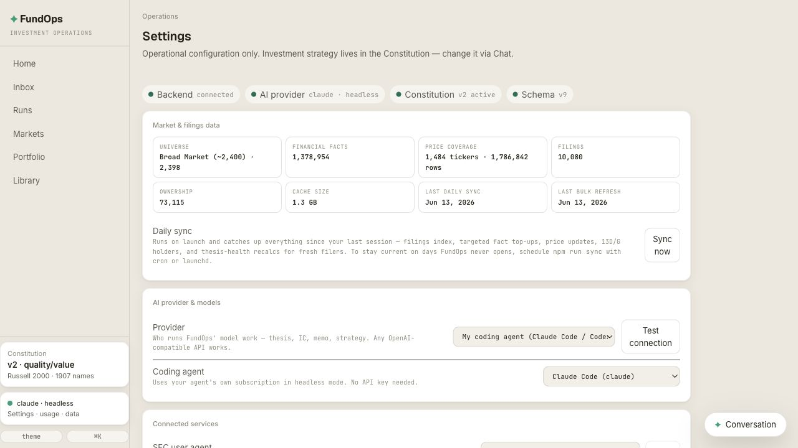
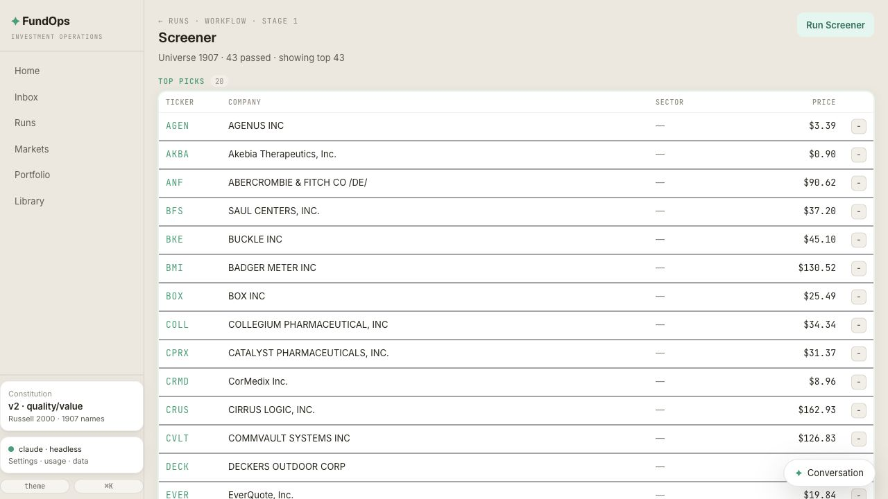
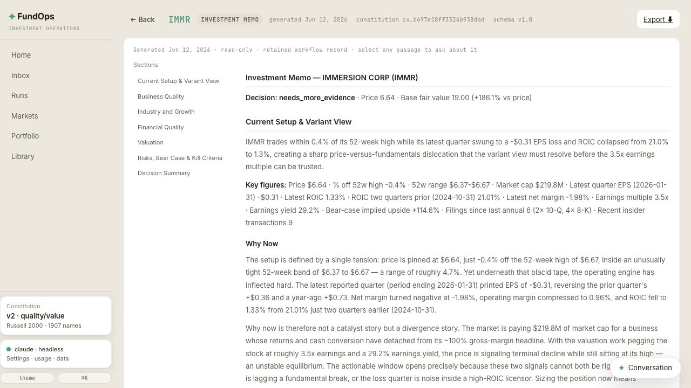
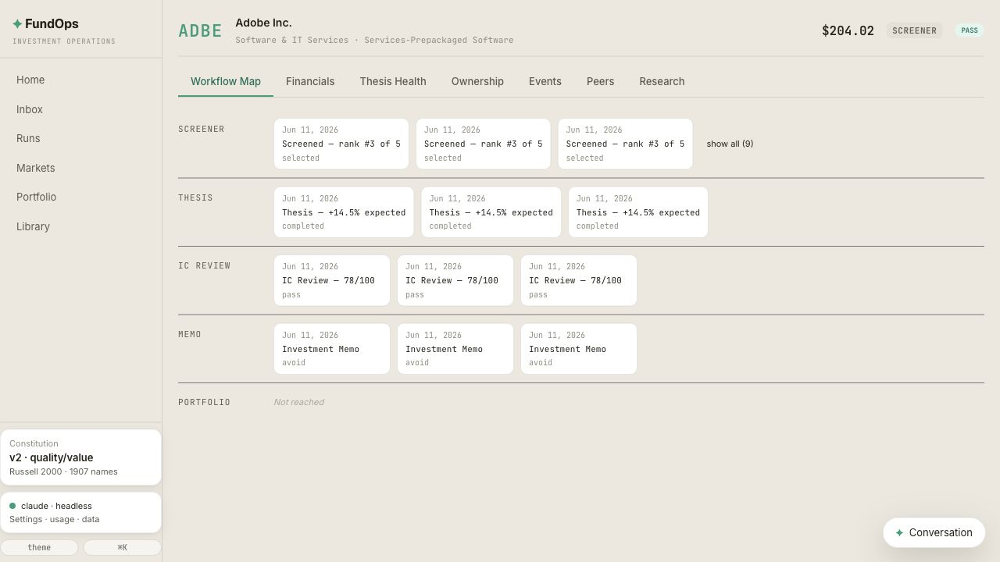
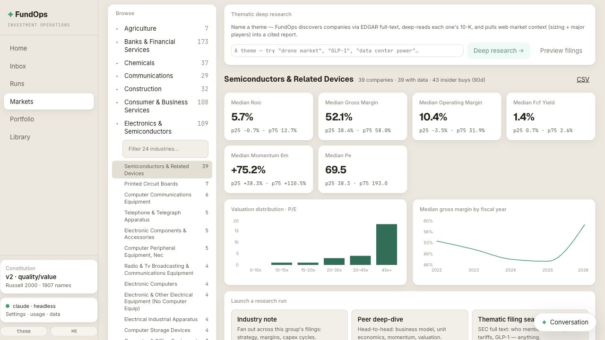

A local, AI-native investment operations workspace for one investor. Define your strategy in conversation, run durable research workflows, browse retained market data, and route reviewable decisions into an Inbox — without ever delegating the decision to software.
FundOps is a real workspace: Home for briefing and chat, Runs for the research pipeline, Screener and Memo workbenches for concrete output, Markets for retained sector work, and Company pages for ticker dossiers.








Describe your strategy in plain English and approve the resulting Constitution — exact rules, typed criteria, deterministic wiring. Home, Runs, Markets, Portfolio, and Inbox all read from that same source of truth, and everything generated is a versioned, source-linked artifact.
The command surface. Strategy Chat turns plain-English strategy into a reviewable Constitution proposal; Archive Q&A and data questions answer from retained records with citations.
A durable stage map for Screener, Thesis, IC Review, and Memo. Stages run independently, resume, fail visibly, and hand off explicit selections downstream.
Sector, industry, watchlist, and thematic research over retained local data, with bounded cited AI research runs when you need deeper work.
Deterministically applies your Constitution's screening requirements to a universe (Russell 2000 by default) and ranks survivors by your approved blend. Top picks hand off to Thesis.
One-page AI-written opportunity arguments with explicit return-source decomposition, grounded in retained SEC evidence and ranked for IC Review.
The memo-worthiness gate: hard hurdles first, then a scored blend of conviction, Constitution fit, and data quality. You can override either way — overrides are recorded.
Structured seven-section Investment Memos with a fixed outline, comparable across companies, plus a separate machine-checkable monitoring plan.
An unresolved attention and decision queue: pending approvals, positions under pressure, Constitution-fit opportunities, thesis breaks, failures. Not an activity feed.
The read-only dossier per ticker: workflow history map, full financials, and memo-backed thesis health. The Library opens it for any ticker with retained history.
Ledger-first: purchase lots and sales in, holdings and realized/unrealized P&L projected out. Held positions automatically get memo-backed thesis coverage.
Operations only: provider selection, model usage records, sync status, cache/export controls, and destructive resets. Strategy never lives here.
Everything you need to run a systematic investment process.
Plain-English strategy becomes versioned, typed criteria with deterministic wiring. Nothing activates without your explicit approval; versions are immutable.
Every material claim is grounded in retained, source-backed evidence or explicitly marked unsupported. Artifacts record the exact evidence bundle that produced them.
Each memo ships a machine-checkable monitoring plan. Daily filing detection recalculates thesis health for exactly the tickers that filed.
Purchase lots and sales are the source of truth; holdings and P&L are rebuildable projections. Held positions queue memo-backed thesis coverage.
SEC bulk products and batched Yahoo Finance prices cover the whole universe for free; daily ticks are ~1–3 MB. Live APIs are reserved for on-demand research.
OpenAI API, the coding-agent CLI you already subscribe to (Claude Code / Codex), or a deterministic offline stub — every model call is recorded as an AI Usage Record.
Artifacts are never edited in place — new versions supersede old ones. Archive Q&A answers questions across your retained history with citations.
On launch, FundOps catches up everything since your last session. A headless npm run sync keeps data current from cron on days you don't open the app.
Requires Python 3.12+ and Node.js 18+. No API key needed to explore — without one, FundOps runs in a clearly-marked offline stub mode.
Breadth data arrives as official bulk products — one bootstrap download (~2–3 GB), then ~1–3 MB daily ticks. No paid data API required.
| Source | Cost | What it provides |
|---|---|---|
| SEC companyfacts.zip | Free | Reported fundamentals for the whole universe, refreshed weekly or on demand |
| SEC daily index files | Free | Filing detection that drives targeted fact top-ups and thesis-health recalcs |
| SEC ownership data sets | Free | Insider transactions (Forms 3/4/5) and 5%+ holders (Schedule 13D/G) |
| Yahoo Finance (batched) | Free | Price history for the universe; daily updates ride the sync tick |
| OpenAI / your coding agent | Optional | Thesis, IC review, and memo writing — or run fully offline in stub mode |